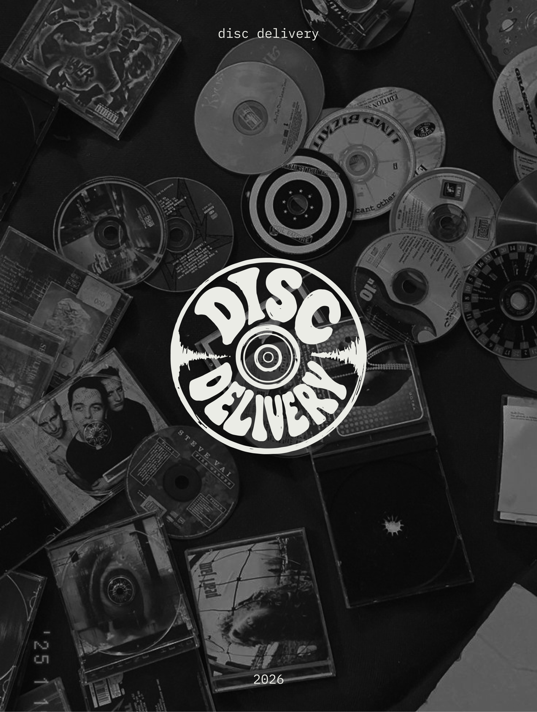
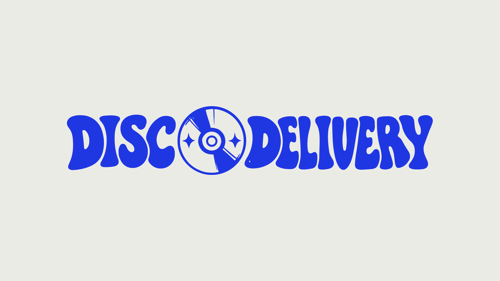
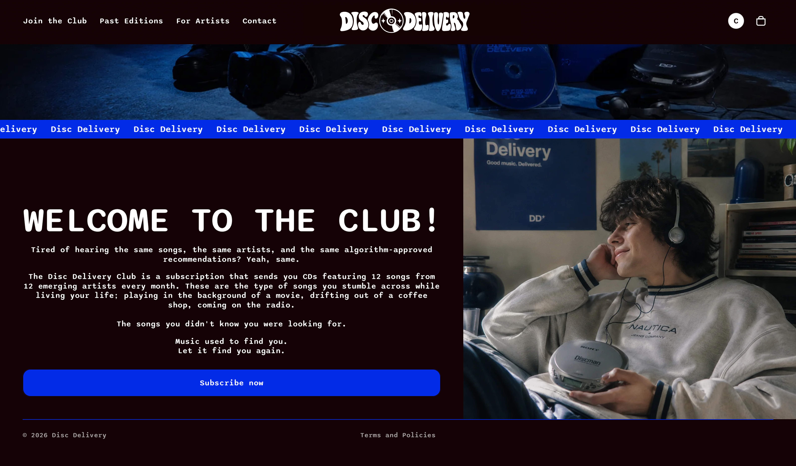

04 disc delivery

- type
- own project · subscription concept
- team
- solo
- scope
- brand · web · packaging · editorial
- year
- 2026, ongoing
the idea
streaming makes discovery feel passive. disc delivery slows it down: every month subscribers get a cd with 12 independent artists, a booklet about them and an art print. our mission? to let music find you again


what i did
i developed disc delivery as a physical music discovery service for finding smaller and emerging artists. i designed its visual identity, including the logo, typography and colour palette, and explored how the brand could work across the website, cd, booklet and social media. i also developed the subscription model and the overall experience of discovering, receiving and interacting with a delivery.
what i learned
the concept changed many times during the process, from signed cds and info cards to the curated compilation it is now. this taught me to think about the project as one connected experience rather than separate design elements, from discovering the service online to opening the finished package.
a work in progress
disc delivery is still an ongoing project and will continue to change as i develop it further. there have already been multiple versions of the logo and visual identity, and some of the current imagery is ai-generated and mainly used to communicate the concept.